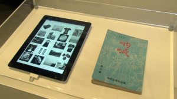
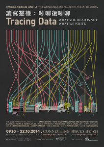

Mixed media networked installation, custom software, 2014
selected for The Writing Machine Collective, 5th edition (WMC_e5)
'TRACING DATA: What you Read is not What we Write'
An English translation of 'The Real Story of Ah-Q' is read by an algorithmic process that highlights phrases from Lu Xun's revolutionary work. The phrases selected are words that others have also written - that is, they have been found on the Internet in other documents not written by or about Lu Xun. As the work progresses, the algorithmic reader sends these phrases to search engines, showing how they can be read now, in real time. This networked re-reading, augmented with targeted advertising, images, and even censorship, exists within an algorithmic framework still little-examined in terms of its effects on reading, and, indeed, its control of free inquiry itself.
作品以魯迅的革命性作品《阿Q正傳》的英文譯本作藍本，經數學程式分析處理書中的詞彙，選取的字詞是那些在網絡上其他非魯迅著作內出現的。搜尋過程中，「電讀器」將選取的字詞在不同網絡搜尋器內搜索，展示它們當下如何被閱讀。網絡內的延展閱讀，經由廣告、圖像及審查，不斷增加，在程式內依然不經審查地自行校閱。魯迅的原著始終默然不發聲，安靜的給置放在旁邊的讀經台上。
Connecting Spaces, North Point
This installation is driven by the artists' Read for Us (為我們看書) engine by which a typographic display moves through the words of the chosen text, phrase by phrase, and then sends these phrases to a search engine, allowing the search engine to provide viewers with its own reading of the phrases (and perhaps also encountering occasional problems of access to related results and associated topics.) A physical book, closed to us, is placed on a lectern nearby. The active digital reader is open to us in a new if now familiar way, within a culture of search and inquiry.
We call the application visible on the large screen a Perceptual Reading Interface. The name derives from the area of attention within our visual field that shifts as we read a text on an inscribed surface. Studies have shown that we see only 30-40 characters distance around the central point of our focus. This interface presents a text in constant motion that preserves the phrase being read at the center of this focal area. However, crucially, the interface provides its readers with access to a typographic neighborhood, a concept we believe to be crucial for traditional reading experiences and distorted by Internet services and mobile devices. We show the text in movement, but we also show an approximation of the words that would have surrounded our focus of attention had we been reading these words on a typeset page. The exploration of typographic neighborhood is crucial to The Readers Project of which Read for Us and The Real Story of Ah-Q are instances.
In this installation a Perceptual Reading Interface moves our attention steadily through an English version of Lu Xun's story. It reads up to nine words at a time, but chooses these phrases more carefully than may be apparent at first glance. At any one time, it only reads sequences of words that can be found in the indexes of Google Books and that are not associated with Lu Xun (as far as our robots call tell). In other words, the reader first checks that other writers have also used each sequence of words in order to compose their own books and articles. As short sequences, therefore, these words are not unique to any particular person. They have also been composed by others and, in a sense, might have been written by anyone. Distinguished in this way, they can be recognized as forming elements of the commons of language that is democratically maintained by everyone who makes language.
The installation demonstrates contemporary modes of reading, contrasting these modes with those of the past and with traditions of 'deep' as opposed to 'hyper' attention. Network services and censors read, for us, this still important work of Chinese cultural and political critique. What happens when the phrases themselves, regardless of their associations with any particular writer - and here: translated into English - are flagged as contentious by the indexed network services through which all of us now read?
'TRACING DATA: What you Read is not What we Write' was held at Connecting Space-HK, Oct 9-22, 2014.